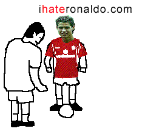

#9832 1 2006-07-01T00:27:45Z great_sea I was just browsing and noticed that there was no thread devoted to the World Cup. I felt I should remedy the situation. I quite enjoy the World Cup and have been watching a good amount of the games. How about you guys? What teams, if any, do you want to win? Use this thread to comment on anything related to the World Cup.
I started out rooting for the USA and/or the Ivory Coast. I figured one of them was bound to be eliminated, and they were both underdogs. I wish the Ivory Coast would have made it past the first round, but they really had a tough group. I thought they played very well in their games, despite losing two of them. In fact, their game against Argentina was one of the most exciting I have seen thus far. It would have been nice to see an African team make it to the quarterfinals. USA on the other hand I was largely disappointed with. Not much to say about them. Anyway, since those two teams are quite eliminated, I'm hoping for a Les Bleus win - France, that is. I don't know too many people that are fans of France, but I recently visited Montreal, so... yeah, I jumped on that bandwagon.
Also, the games today were pretty good. I thought Italy would beat Ukraine, but not 3-0. Still, Ukraine did well for making it so far as the underdogs. This was their first World Cup appearance. Kudos to you, Ukraine. I'm happy for Germany that they are doing so well. It just seems fitting that the host team should make it at least to the quarterfinals. At this point, I wouldn't be surprised if Germany won the World Cup.
I'm very much looking forward to tomorrow's France-Brazil match. Most people I know are rooting for Brazil, so naturally I'm hoping for the upset. On a side note, France previously defeated Brazil in the final match to win World Cup '98 (Er... I think. You can correct me if I'm wrong.)
I'm really not a big sports guy; the World Cup one of the few sporting events that I like to follow and watch. So enough from me. Tell your predictions, thoughts, grievances, and so forth!
#197216 2 2006-07-01T00:30:05Z wedgie Yeah i saw Germany Knock out Argentina earlier on penalties. Im backing England, obviously, so i cant wait till the match tomorrow.

#197235 3 2006-07-01T01:29:32Z great_sea Oh yeah. I somehow forgot England was still in it. I'll be rooting for them against Portugal, but I don't expect them to win. What an upset if they made it all the way to the final match! If they beat Portugal, I think they would have a better chance against France than Brazil.
#197237 4 2006-07-01T01:33:48Z McP3000 Go Joymany
My last name is joyman and i have joyman descent...yay for Joymany
#197245 5 2006-07-01T01:41:01Z Guest Go USA! GO USA! wiat, what? You mean the lost? damnit. um..... Go joymany!
#197253 6 2006-07-01T01:57:42Z Shark I am hoping that Italy will win. I was kinda rooting for USA, but ever since their numerous losses (Ghana, Italy, etc.) and their semi-recent elimination, I have focued on Italy.
Go Italia!
#197285 7 2006-07-01T03:01:42Z scythe33 Errr... What's Joymany? 
#197292 8 2006-07-01T03:17:16Z McP3000 Germany with a Germany accent
#197300 9 2006-07-01T03:24:53Z Navick I was rooting for Argentina, but I didn't watch the game, but now that you said it, wedgie, I'm sad.
Now I'm rooting for Brazil!
#197344 10 2006-07-01T07:45:59Z sweep I was gonna start a thread like this a while back, but I figured none of you guys really cared.
I was rooting for Germany yesterday, on the basis that the Argentinians are naturally a bunch of cheating little... you know whats.
'course, I'm behind England (hence me being English)
#197347 11 2006-07-01T08:21:39Z krusch I'm going for Germany, now that Australia is knocked out (Sad. ;_;).
So congrats to them for their win last night, they're amazing with their penalties.
Also, isn't it Argentines, rather than Argentinians? /me ducks.
#197354 12 2006-07-01T09:56:06Z spect Go Germany!
A funny fact is, that people laughed about Germany two weeks ago, because noone expected them to go so far. Now, that we even won against Argentinia, I could easily imagine winning the World Cup this time

What I found quite embarrassing was Italy's game against Australia. Australia definitly deserved to win this game.
Oh, and great_sea: Ghana is in Africa and they made it into the last sixteen

#197356 13 2006-07-01T10:08:27Z sweep Well, funnily enough, me and my brother are doing a prediction thing. At the beginning of the tournament, we predicted the entire tournament, all the results, and therefore the knock-out round ties and so on.
My prediction for the semis and final were (at the beginning of the tournament):
Semi 1: Germany 2 vrs. 0 Ukraine
Semi 2: England 2 vrs. 2 Spain (England win 4-2 on penalties)
Final: Germany 1 vrs. 3 England.
So, as it happens, I expected Germany to do well. You're always good in tournaments, and if S. Korea can reach the semis by just being hosts, you were always going to do well.
Oh, and if you're interested, by the points system we've used for the predictions thing, I'm currently beating my brother 141 to 132, but he could still pull it back.
#197362 14 2006-07-01T10:21:10Z theshav Naturally, I root for the host nation and obviously my own country (Australia). Heh, I had a bet with my dad Germany would beat Argentina on penalties. I think Australia (not being bias) played really well against Italy and probably deserved to win but meh.
#197380 15 2006-07-01T11:42:47Z SMTID OkOk i guess your all expecting me to rant about how much i hate england but ill keep it civilized.....
Originaly i was supporting Trinidad and Tobago because theres lots of players who play in scotland play for them and they were underdogs (plus they were in englands group

) but there now out although they put up a good fight against england and sweden.
Ill be backing Portugal today and hoping for a repeat of euro 2004

.
I think joymany will win it though.
#197382 16 2006-07-01T11:47:16Z sweep Naturally, I root for the host nation and obviously my own country (Australia). Heh, I had a bet with my dad Germany would beat Argentina on penalties. I think Australia (not being bias) played really well against Italy and probably deserved to win but meh.
Well, by the same token the goal that Kewel scored to put Australia through to the second round was offside, it shouldn't have counted.
#197428 17 2006-07-01T14:32:01Z Implied Quotient Well, right off the start of the World Cup I was hoping for Austrailia, having been there and loved it.
But, now that they're out, I'm either going for Brazil or Italy.
#197444 18 2006-07-01T15:31:39Z Twistkill Italy beat Ukraine in the quarterfinal match 3-0. Germany is facing Italy in the semi-finals. That's going to be good. Italy's going to win. GO ITALY!
#197448 19 2006-07-01T15:34:51Z Guest Go Germany! Dont go brazil!
#197545 20 2006-07-01T18:32:35Z 7! England's out. Lost to Portugal in PK's...1-0.
#197546 21 2006-07-01T18:36:17Z M C Queen I know, it's so sad

#197549 22 2006-07-01T18:40:38Z mascote_ponto Portugal won!
")
JF was also here watching the game.
#197554 23 2006-07-01T18:49:57Z iangb Dr Who was better than the football.
We have now learned that england cannot take penalties, especially when they're missing several key players. Oh, and the Portugal's goalie is awesome.
#197555 24 2006-07-01T18:55:11Z Guest brazil had better not win again. Or there will be much crying.
#197604 25 2006-07-01T21:51:31Z 7! Brazil's shot down, shut out. 1-0.
#197620 26 2006-07-01T22:25:03Z Shark Brazil is out to France???
thats crazey!
ANYWAY, RICARDO WAS AWESOME AT THE PKs FOR THE PORTUGAL VS ENGLAND GAME!!
ok, il stop shouting.
#197683 27 2006-07-02T01:22:56Z Guest I am so glad brazil lost, even if it was to the french. I hope otaly wins it all though. No more joymany.
#197693 28 2006-07-02T01:42:14Z Mark We have now learned that england cannot take penalties
We kinda already knew that... The number of times england have been beaten by penalties is quite a few.
Still, England are out. And unfortunately France beat Brazil. If we'd stayed in the competition we would have had a decent chance of winning. Nevermind. There's always the next world cup...
#197699 29 2006-07-02T02:18:15Z Shark Nevermind. There's always the next world cup...
lol..
I think the commentators were commenting about The English Team this Year. A couple of people are leaving the team, so this was probably their last shot- unless they get some rivaldo-or-beckam quality people.
#197710 30 2006-07-02T02:41:54Z great_sea Hurray for France! I think they can beat Portugal, but they will have a tough fight against Germany (who I think will beat Italy.)
Final two: France and Germany.
#197737 31 2006-07-02T04:36:18Z astro I'm going for Germany, now that Australia is knocked out (Sad. ;_;).
Same here, except that I was going for Switzerland as well.
#197739 32 2006-07-02T04:53:04Z Implied Quotient Then why does your sig have "For Korea" in it?
#197744 33 2006-07-02T05:18:05Z astro It used to be "for China". It was critically acclaimed:
Quote
● "It embraces satire about Communism. I enjoy that." KinGAleX
● "I love it. Actually, I don't. Oh. I love it." Linus
● "It reminds me of a penguin that has been bludgeoned to death." Sweep
● "It's quite appetizing. Am I getting paid?" Bigblargh
#197802 34 2006-07-02T12:06:23Z sweep I have just about recovered from the coma of depression that was yesterday

The referee should never have sent off Rooney. He should have been taken aside, given a yellow and told that he was skating on thin ice.
Hargreaves was brilliant. I'm especially pleased about that, I've been trying to persuade everyone he is brilliant throughout the whole tournament, all my friends thought I was talking bollocks. They can't escape it now.
Their penalties were worse than ours, ultimately Ricardo is the reason we're exiting, along with that smarmy little letch Ronaldo. There's no way he can stay at Man. U, they'll stone him out, he's surely moving to Real Madrid now.
The English press also need to take a good look at themselves too. After harping on about Scolari's brilliance all this time they probably won't admit the fact that his tactics were awful yesterday, truly awful. Bad substitutions, but no-ones going to admit that. Furthermore, the half time report in England basically consisted about them complaining about our half-time performance. The first half was 50-50, same action happening at both ends, Portugal were just as good/bad as us. And yet, in the half time report, you'd think they'd been all over us. Shocking, cynical, and downright annoying.
#197834 35 2006-07-02T14:48:49Z Dimst I have just about recovered from the coma of depression that was yesterday
The referee should never have sent off Rooney. He should have been taken aside, given a yellow and told that he was skating on thin ice.
Hargreaves was brilliant. I'm especially pleased about that, I've been trying to persuade everyone he is brilliant throughout the whole tournament, all my friends thought I was talking bollocks. They can't escape it now.
Their penalties were worse than ours, ultimately Ricardo is the reason we're exiting, along with that smarmy little letch Ronaldo. There's no way he can stay at Man. U, they'll stone him out, he's surely moving to Real Madrid now.
The English press also need to take a good look at themselves too. After harping on about Scolari's brilliance all this time they probably won't admit the fact that his tactics were awful yesterday, truly awful. Bad substitutions, but no-ones going to admit that. Furthermore, the half time report in England basically consisted about them complaining about our half-time performance. The first half was 50-50, same action happening at both ends, Portugal were just as good/bad as us. And yet, in the half time report, you'd think they'd been all over us. Shocking, cynical, and downright annoying.
Rooney did deserve to get sent off, he stamped the guy where the sun don't shine, if that's not worth a red card then what is?
Hargreaves did play well but he should of been booked for persistant fouling. Portugal played rubbish but England were worse and have been the whole tournament, the only reason they got this far was that they had an easy group and an easy second round game. After Rooney was sent off Portugal continued to play with no urgency that was their problem. Beckham has been hopeless the whole tournament, the only reason he is in that team is to cross and take free kicks, he couldn't even do that yesterday. Erikson was lucky he got injured because Lennon is clearly a much better player and that gave him an exscuse to put him on for Beckham as he wouldnt have the balls to do it normally.
England were missing three of there main penalty takers (Beckham, Rooney and Owen) but there is no exscuse for missing from 12 yards.
Portugal will be destroyed by Germany in the next round.
#197860 36 2006-07-02T15:38:31Z Shark Rooney is the dumbazs who made England lose to Protugal...man..i had it all planned out...o well, at least Italy and France are still In the competition...
#197862 37 2006-07-02T15:41:22Z sweep Rooney did deserve to get sent off, he stamped the guy where the sun don't shine, if that's not worth a red card then what is?
If you stamped him there on purpose, of course he deserved to get sent off, but the fact is that he didn't. Watch the replay. He's stumbling, he's being pulled over the place, he's out of balance.
Hargreaves did play well but he should of been booked for persistant fouling.
If you think Hargreaves should have been booked for persistant fouling, then you're following the wrong rules. The fouls that were given against him simply weren't fouls for a start; he was going in hard, but he was winning the ball. Foreign referees are consistently petty, and dislike players going in hard even if they win the ball... it's pathetic.
Portugal played rubbish but England were worse and have been the whole tournament, the only reason they got this far was that they had an easy group and an easy second round game.
If you think England were worse, then you can't have been watching the same match as me. It was 50/50 throughout up until the sending off, the only difference being that the Portugese weren't playing fair, diving for freekicks at any ready opportunity. And in reply to how we performed in our group and the second round, we beat was infront of us, without too much trouble at all. We might well have beaten Portugal on another day, and could beat any team that's now in the semis, equally they could beat us, but the fact is you can't make judgements on a team on how they play against worse teams.
Example: in the past year we lost to N. Ireland 1-0. Not long after that, we beat Argentina 3-2.
After Rooney was sent off Portugal continued to play with no urgency that was their problem.
No, there problem was that, even with an extra man, they couldn't infiltrate our defence without leaving a huge risk of a counter-attack. We were more likely to score, all their attempts were from a huge distance out whereas we were constantly getting in their box, and on another day Terry's shot might have found the net or Lampard might have put away the gaping opportunity on the volley.
Beckham has been hopeless the whole tournament, the only reason he is in that team is to cross and take free kicks, he couldn't even do that yesterday. Erikson was lucky he got injured because Lennon is clearly a much better player and that gave him an exscuse to put him on for Beckham as he wouldnt have the balls to do it normally.
Beckham won the game against Paraguay. Beckham assisted both goals against Trinidad & Tobago. Beckham won the game against Ecuador. Looking at every game that we won, every goal has Beckham playing a key part. Lennon is a great player to bring on towards the game at the end, but the fact is Beckham wins games.
England were missing three of there main penalty takers (Beckham, Rooney and Owen) but there is no exscuse for missing from 12 yards.
Actually, Rooney wouldn't be in our top 5 penalty takers, and neither would Owen. Essentially, our penalties weren't great. But they were all on target, and apart from Gerrard's they were pretty well placed - it's not our fault Ricardo is the world's best penalty stopper.
Portugal will be destroyed by Germany in the next round.
They won't meet Germany in the next round, they can only meet in the final.
#197873 38 2006-07-02T16:23:05Z Dimst If you stamped him there on purpose, of course he deserved to get sent off, but the fact is that he didn't. Watch the replay. He's stumbling, he's being pulled over the place, he's out of balance.
He did it on purpose, he was grabbing at them before he done it too.
If you think England were worse, then you can't have been watching the same match as me. It was 50/50 throughout up until the sending off, the only difference being that the Portugese weren't playing fair, diving for freekicks at any ready opportunity
You're just the typical englishman making any exscuse you can think off other than you deserved to lose. I can't think of a single instance of Portugal diving.
on another day Terry's shot might have found the net or Lampard might have put away the gaping opportunity on the volley.
Likewise on another day Portugal might of had Deco playing, their goal might of been onside, Ronaldo might of skinned everyone and chipped the keeper, but it wasnt that day so your point proves nothing.
Beckham won the game against Paraguay. Beckham assisted both goals against Trinidad & Tobago. Beckham won the game against Ecuador. Looking at every game that we won, every goal has Beckham playing a key part. Lennon is a great player to bring on towards the game at the end, but the fact is Beckham wins games.
Beckham won the Paraguay game WITH A FREE KICK, he assisted the T&T Crouch goal WITH A CROSS he won the Equador game WITH A FREE KICK. What else can he do? Nothing. Notice hes retired as captain? He knows himself he done nothing the whole tournament.
They won't meet Germany in the next round, they can only meet in the final.
My mistake.... France will destroy Portugal in the next round.
#197894 39 2006-07-02T16:54:08Z LouDog004 As an unbiased observer, I'll just say a few things. I'd say Rooney was definately just trying desperately to maintain control of the ball, no nut stomping intended. The sad thing, though, is that if he had just flopped when the defenders had started badgering him, he would have gotten a call. Instead, he furiously attempted to handle the ball and make a play, and was penalized for it
Clearly he needs to take a page out of Totti's book.
And speaking of flopping, Dimst, the Portugese had several blatent dives during the game, but the ref was quite good about ignoring
most of their antics.
Funny thing about England though was it seemed they started penetrating more successfully and creating more opporitunities once Rooney went off. One would have thought Portugal had 10 and not England the way possession went for most of the second half.
Thing is, though, that the way Portugal and England have been playing all Cup, I don't see either of them matching up against Germany, Italy (Bleh, I can't believe I said that), or the slow starting but hot hot France.
On another note, France completely took that game from Brazil. The looked flipping beautiful. Color me suprised.
#197896 40 2006-07-02T16:55:36Z wedgie If you stamped him there on purpose, of course he deserved to get sent off, but the fact is that he didn't. Watch the replay. He's stumbling, he's being pulled over the place, he's out of balance.
He did it on purpose, he was grabbing at them before he done it too.
Rooney wasn't red carded just because of that tackle. It was because he retaliated and pushed Ronaldo afterwards too. I think Rooney would have just come away with a yellow if he didn't retaliate.

#197903 41 2006-07-02T17:09:29Z sweep He did it on purpose, he was grabbing at them before he done it too.
When you actually justify why you think he did it on purpose I'll listen to you, but until then the replays show it was a mistake.
You're just the typical englishman making any exscuse you can think off other than you deserved to lose. I can't think of a single instance of Portugal diving.
Portugal were all over the place. We deserved to have beaten them, but up until the sending off it was 50/50. In 2002, we deserved to lose to Brazil. In 2004, we deserved to lose to Portugal. In 2006, we deserved to get the win. Equally, at the end of the day we didn't do enough to win it, it's mostly our fault we're going out, but there are still several essential things that went against us, and Portugal are lucky to be in the semis.
Likewise on another day Portugal might of had Deco playing, their goal might of been onside, Ronaldo might of skinned everyone and chipped the keeper, but it wasnt that day so your point proves nothing.
There's a clear difference between my examples and yours. The ball fell to Lampard, and had he on-form, like he has been for 11 months of the past 12, he would have finished it. It was essentially a sitter. It was very close to happening. Whereas, in your examples, those are just random scenarios you brought up. I'm not using Lampard's miss as an excuse, we didn't finish the chances we got. I'm simply reviewing the game.
Beckham won the Paraguay game WITH A FREE KICK, he assisted the T&T Crouch goal WITH A CROSS he won the Equador game WITH A FREE KICK. What else can he do? Nothing. Notice hes retired as captain? He knows himself he done nothing the whole tournament.
Who gives a damn about how he does it? The point is, he won us all those games. He didn't have the best tournament, but he did have quite a few great moments in open play too.
How can you have a paragraph with the statements "Beckham won the Paraguay game", "he assistead the T&T Crouch goal", "he won the Ecuador game" and "he done nothing the whole tournament"? Don't be stupid, you said it yourself, he won two games and was a large part in winning the other.
Thing is, though, that the way Portugal and England have been playing all Cup, I don't see either of them matching up against Germany, Italy (Bleh, I can't believe I said that), or the slow starting but hot hot France.
Certainly not on the performances either team gave. But, France have proved that if you have the right players you can turn performances round, and England and Portugal both have potentially brilliant starting 11s. Portugal still aint out, but if they perform like they have done so far they are on their way out against France.
#197909 42 2006-07-02T17:29:15Z Dimst Well Sweep I guess we have to agree to dissagree.
On another note, i think after Rooney was sent off Erikson should have put Joe Cole upfront instead of taking him off for Crouch. I can see that Crouch has the obvious advantage of height and they can launch long balls at him but that tactic has not been working for England. If Cole had been put upfront he could of held the ball up much better than Crouch and created more chances.
#197910 43 2006-07-02T17:32:18Z sweep Cole is better at taking people on one-and-one, but it would be illogical to play Cole out of position, when Crouch played up on his own upfront for Liverpool much of last season. He's good at holding up the ball, and when you're a man down playing beautiful football is no longer a priority.
#197965 44 2006-07-02T19:51:18Z Guest all I can say is that I am glad that brazil is out. Even if it is to france.

I hope italy beats france.
#197987 45 2006-07-02T20:29:49Z Dimst When you actually justify why you think he did it on purpose I'll listen to you, but until then the replays show it was a mistake.
Call this an accident?
Attachment (lost): post-5-1151872189.jpg
#198007 46 2006-07-02T21:04:02Z sweep When you actually justify why you think he did it on purpose I'll listen to you, but until then the replays show it was a mistake.
Call this an accident?
A single frame proves nothing. The video is what's important, you can take a single frame of anything and make it incriminating. The video shows he was stumbling around and it almost certainly wasn't on purpose.
#198010 47 2006-07-02T21:15:13Z Shark When you actually justify why you think he did it on purpose I'll listen to you, but until then the replays show it was a mistake.
Call this an accident?
A single frame proves nothing. The video is what's important, you can take a single frame of anything and make it incriminating. The video shows he was stumbling around and it almost certainly wasn't on purpose.
Well, what should the ref have done, instead of make it a Red Card? He couldnt have given him a Yellow or just declare it a foul, because everyone knows that if the Ref acknowledges Rooney's fault in this, he would have to give him a Red Card. As a ref, he was put in this type of dilemna-what would you have done? As a ref, he cannot look at replays and sutff, he has to give a ruling immediately. (Gameplay will go on unless he stops it, and he cant stop it for an ilegitamate reason)
Ive been in situations like this ( not as bad, but close ), i Ref sometimes.
#198013 48 2006-07-02T21:19:35Z sweep I'm not having a huge go at the ref. He did the wrong thing in my opinion, but they're under so much pressure, people make mistakes. Barring the fact that Rooney was actually fouled by the Portugese player before he reacted as it were, he should have been given a yellow for his push on Ronaldo. I think the referee cost us a player, but equally, it's not an easy job.
Oh, and Dimst, you want me to prove my point about the single frame? On the single frame, this from yesterday's match looks like a sending off:

Is it a sending off? No, that's just the way the individual frame makes it look like.
#198014 49 2006-07-02T21:21:26Z wedgie OMG! The red card wasn't
just because of the tackle, its because he retaliated and pushed ronaldo out of the way after.
If you watch it then you see that the ref isn't reaching for his pocket or anything after the tackle, but as soon as he pushes ronaldo the ref totally changes and then pulls rooney away to red card him. So its pointless arguing weather the tackle was deliberate or not, becuase that wasn't the only grounds for the red card.
#198018 50 2006-07-02T21:28:03Z Guest exactly. As someone said earlier, you have to watch the entire thing. THe tiackle, the push push, and the ref.
#198019 51 2006-07-02T21:30:11Z Shark wedgie: i know ..I was implying that people make mistakes when are under pressure.
#198020 52 2006-07-02T21:32:19Z Dimst That actually looks like Terry is biting his elbow
And while we're at it....

Doors that way.....
And Sweep...
heres your video evidence. Even the english biast commentator said it looked delibrate.
#198046 53 2006-07-02T23:23:10Z scythe33 When you actually justify why you think he did it on purpose I'll listen to you, but until then the replays show it was a mistake.
Call this an accident?
Take it from someone who has no reason to care about the outcome: that looks like an accident.
@sweep: Is that guy biting the other guy's elbow? #198051 54 2006-07-02T23:35:47Z Guest we will never know. I presume that the other guy is hitting him in the mouth. Look how his cheek is fluttering.
#198076 55 2006-07-03T00:35:24Z wedgie Oh nice on Dimst for finding a video, i was looking everywhere for one. Looking at that video im still sure that it was an accident. He was stumbling and was just trying to get his footing. He was sent off for retaliating in my opinion. You can tell from looking at the ref, after the tackle he is stoof there, but as soon as he pushes ronaldo the ref goes mad.
#198209 56 2006-07-03T10:10:51Z sweep You think that picture looks like he's biting his elbow? Look at it again. Terry's face looks like it is strongly being impacted, which strongly suggests and elbow - if you want to twist it and say it's Terry biting then to me that proves that you're going out of your way to be anti-English. Sure, I am biased to a degree as I'm English, but I'm still a reasonable person.
I can't tell you for sure whether what Rooney did was delibrate or not, but as wedgie and scythe say, it looks like a mistake.
Also, one thing you do have to consider is that slow-motion replays make things look worse. If you watch it at normal speed, the stamp looks like a stumble, but in slow-motion, everything looks more purposeful and delibrate. You can make harmless challenges look horrible. What Rooney did was of course horrible, but it looks like a mistake.
#198229 57 2006-07-03T11:54:06Z Dimst You think that picture looks like he's biting his elbow? Look at it again. Terry's face looks like it is strongly being impacted, which strongly suggests and elbow - if you want to twist it and say it's Terry biting then to me that proves that you're going out of your way to be anti-English. Sure, I am biased to a degree as I'm English, but I'm still a reasonable person.
We were just kidding, lighten up.
#198364 58 2006-07-03T17:04:53Z jetcombo15 I'm for Portugal, but from the looks of it, France is probably going to win.
#198365 59 2006-07-03T17:07:12Z ZZ9 Quote
"Rugby is game for barbarians played by gentlemen. Footbal is a game for gentlemen played by barbarians."
#198376 60 2006-07-03T17:58:40Z Twistkill I'm for Portugal, but from the looks of it, France is probably going to win.
Woah, you're back? Eldrial, glenno14, Bannanakid, and a bunch of others came back recently, as well... hmm...
I am still hoping that Italy wins. My dad said that Germany was lucky in the quarterfinal match and that they shouldn't have won. I bet the World Cup match is going to be Italy vs. France. Just like in 1998.
#198427 61 2006-07-03T21:22:28Z johnny_faneca I think Portugal wil win and shut you all!!!
Brazil was also the best... now look at them!
England was a bit arrogant too and they deserved to lose like in 2004. There are no better teams, at this point anyone can win.
#198542 62 2006-07-04T02:24:17Z jetcombo15 I'm for Portugal, but from the looks of it, France is probably going to win.
Woah, you're back? Eldrial, glenno14, Bannanakid, and a bunch of others came back recently, as well... hmm...
I am still hoping that Italy wins. My dad said that Germany was lucky in the quarterfinal match and that they shouldn't have won. I bet the World Cup match is going to be Italy vs. France. Just like in 1998.
How you even remember me is completely beyond me.
I think the final match is going to be Germany vs. France.
#198575 63 2006-07-04T03:02:02Z Twistkill How you even remember me is completely beyond me.
I guess I have a good memory. Then again, I can forget things that were said to me 5 minutes later. >.>
#198684 64 2006-07-04T11:23:22Z wedgie There was a section in the paper today about the rooney incident. He had said in his statement that he didn't step on that guy deliberatly and if anyone knows what he is like then they would know that rooney is very straight and honest about his game.
#198713 65 2006-07-04T13:00:50Z astro Yeah. You just wouldn't do that purposefully.
#198731 66 2006-07-04T13:57:52Z ~$ib4lmaniac http://www.ihateronaldo.com/
Maybe but a little extreme, but whatever

#198737 67 2006-07-04T14:25:40Z spect Germany will win today. Just so you know. There are three reasons for it:
1. Italy sucked against Australia.
2. Germany plays in its own country.
3. It's my birthday.
#198739 68 2006-07-04T14:29:15Z cyberjuda I wasn't really convinced until i got to reason number 3.
#198785 69 2006-07-04T17:14:12Z wedgie That site is really funny.

#198904 70 2006-07-04T21:32:31Z Twistkill Germany will win today. Just so you know. There are three reasons for it:
1. Italy sucked against Australia.
2. Germany plays in its own country.
3. It's my birthday.
Guess what? Italy just got 2 goals in the last minute of the second overtime. Happy birthday.
#198905 71 2006-07-04T21:33:01Z spect I AM disappointed. Losing in the last 2 minutes to ... Italy. On my birthday. Oh well, I'll have to get over it.
Good luck to France and Portugal! You will surely kill Italy! Because they don't deserve to win the World Cup.
#198909 72 2006-07-04T21:37:02Z Twistkill Italy really didn't start playing until the overtime sessions. I am so happy they won. My dad and I were screaming so hard at the last minute goals.
#198936 73 2006-07-04T23:02:49Z sweep That was a great match, Italy were so underestimated by everyone. Their defence is the best in the world, and they're just damn hard working. I still fancied Germany, but hey, they got through and deservedly. There was no real play-acting.
I'm backing Italy now, then France (Henry's holding of face was despicable and out of character) and least of all Portugal, their attitude, if you hadn't guessed, hacks me off.
And jonnyfaneca, trust me, we're not as arrogant as we can be made out to be. The press over here are hyper-critical of our national team, we just felt that if we got it right we could go far. We didn't get it right. It was very unlucky to go out against you like that, but at the end of the day we didn't play well enough to avoid it.
#198942 74 2006-07-04T23:10:46Z johnny_faneca I just think you are all underestimating Portugal. Don't, we are at the semi-finals damnit!
Anyone can win.
#199056 75 2006-07-05T03:52:52Z great_sea What an exciting match today! I was expecting Germany to defeat Italy in penalty kicks, but no, Italy brought the game to a decisive end. Germany played very well, but their defence began to slow down near the end, and Italy quickly took advantage of that.
@johnnyfaneca: I think you are right. At this point in the competition, almost any team has a good chance to win. Still, I don't expect Portugal could defeat both France and Italy to win the WC. They could possibly beat France - possiby, not probably - but I think Italy would win in the final.
Eh... Go France!
#199107 76 2006-07-05T09:23:54Z astro Come on, Portugal. Please please please please please.
#199135 77 2006-07-05T12:08:32Z sweep I just think you are all underestimating Portugal. Don't, we are at the semi-finals damnit!
Anyone can win.
You're right, anyone can win. But here's why I think you don't stand much of a chance...
- You haven't proven yourselves yet. At all.
- Referees will now be watching you. It's no coincidence you were involved in the dirtiest game of the tournament.
- You're playing France, who are a team that are hitting form at the right time.
- If you play Italy, I can't see you breaking them down. You never looked like breaking us down, even when we were down to 10 men, and Italy are incredibly hard to break down.
In hindsight, if England had got through, I think we would have stood a decent chance against France if we'd raised our game a bit more (if, mind, if), but I think Italy would have walked all over us in the final. I don't think they're the best team of the tournament, but I think we'd have found them hardest to play, they'd stifle us so much. Against Germany it would be a different story.
#199185 78 2006-07-05T14:07:12Z Twistkill I'd like to add that no one has even scored on Italy at all during the whole tournament except for that one accident during the USA match.
#199197 79 2006-07-05T14:30:13Z crappitrash I seriously hope Portugal owns France so I can get to see my dream final in the third placing match. So screwed.
#199221 80 2006-07-05T15:30:26Z sweep I don't understand that mentality at all. A third place playoff isn't too far from a friendly, you should just want to see your favourite remaining teams in the final.
#199249 81 2006-07-05T17:43:44Z Dimst In hindsight, if England had got through, I think we would have stood a decent chance against France if we'd raised our game a bit more (if, mind, if), but I think Italy would have walked all over us in the final. I don't think they're the best team of the tournament, but I think we'd have found them hardest to play, they'd stifle us so much. Against Germany it would be a different story.
Its alwwaaays about england...england are out Sweep deal with it...we'r talking about Portugal now.
#199253 82 2006-07-05T18:02:31Z sweep Ok, I've realised why you're being an arse now. I've also realised why you've been biased towards Portugal. I checked your IP address. You're SMTID, on the different account. Hence being called dimst (what a clever anagram). Yes, you're SMTID, the anti-English brigade himself.
Look, if you're only here to piss people off, you're not welcome.
You used to be a good lad, but now you've become an absolute prat. I don't know if adolescence is turning you inside out, or if you just got bored of behaving nicely, but what you have to realise is that you achieve nothing by doing this. We just think you're an absolute idiot, and you're just wasting your time.
Grow up.
#199258 83 2006-07-05T18:09:29Z johnny_faneca The truth is, England never wins anything

and then they come saying they're the bests

#199261 84 2006-07-05T18:10:32Z Shark the game has started!!-where I live!! yes!!
anyway, I hope France wins, well, because i think they deserve second place...to italy of course..
#199263 85 2006-07-05T18:12:39Z Dimst Ok, I've realised why you're being an arse now. I've also realised why you've been biased towards Portugal. I checked your IP address. You're SMTID, on the different account. Hence being called dimst (what a clever anagram). Yes, you're SMTID, the anti-English brigade himself.
Look, if you're only here to piss people off, you're not welcome.
You used to be a good lad, but now you've become an absolute prat. I don't know if adolescence is turning you inside out, or if you just got bored of behaving nicely, but what you have to realise is that you achieve nothing by doing this. We just think you're an absolute idiot, and you're just wasting your time.
Grow up.
Took you long enough to figure that out....its a bloody anagram.
Im not being biased towards Portugal i simply said we were talking about portugal so stop changin it to be about england and what 'could' of happened if yous were good enough.
And JF ....you got that right

#199265 86 2006-07-05T18:19:21Z sweep The truth is, England never wins anything and then they come saying they're the bests
We're a bad tournament team. We don't do as well as we could and we're awful at penalties which means that we have to win by the end of extra time. Our collective mentality is too fearful, there is too much pressure on the shoulders of our players, they can't cope, so we do badly far too often. Potentially, if we sorted it out, we could beat anyone. But the mentality causes us too many problems.
When we say we're one of the best, we mean that we have the best collection of starting players in the world, man-for-man. We're certainly not the best national team, and infact, we have little squad depth, but taking our starting 11 and comparing man-to-man with other nations then we're very good. Lack of squad depth and lack of team cohesion is why we're out, however.
At least we have a better tournament record history than the Portugese
")
(That said, you're the ones still in the World Cup, and you knocked us out in 2004, so you definitely have the last laugh
)
#199266 87 2006-07-05T18:22:07Z sweep Im not being biased towards Portugal i simply said we were talking about portugal so stop changin it to be about england and what 'could' of happened if yous were good enough.
How can you not be biased towards Portugal if you said you were supporting every team that England play?
Also, if you don't want to hear me talk about England, and only want a thread about the remaining teams in the World Cup then you're in the wrong place. This is the World Cup thread, and therefore it is open to discussion for all World Cup teams. If you want a thread for only Portugal, Italy and France, start your own.
#199267 88 2006-07-05T18:22:55Z Dimst The truth is, England never wins anything and then they come saying they're the bests
We're a bad tournament team. We don't do as well as we could and we're awful at penalties which means that we have to win by the end of extra time. Our collective mentality is too fearful, there is too much pressure on the shoulders of our players, they can't cope, so we do badly far too often. Potentially, if we sorted it out, we could beat anyone. But the mentality causes us too many problems.
When we say we're one of the best, we mean that we have the best collection of starting players in the world, man-for-man. We're certainly not the best national team, and infact, we have little squad depth, but taking our starting 11 and comparing man-to-man with other nations then we're very good. Lack of squad depth and lack of team cohesion is why we're out, however.
At least we have a better tournament record history than the Portugese
(That said, you're the ones still in the World Cup, and you knocked us out in 2004, so you definitely have the last laugh )
Your not a tournemant team? Well what else is there...friendlys and that counts for nothing. You make me sick..why cant you just accept your not world beaters ....'thers too much pressure' 'Blame the ref' 'blame the manager' 'blame portugal' 'blame Smtid' ....
#199268 89 2006-07-05T18:24:43Z Dimst Im not being biased towards Portugal i simply said we were talking about portugal so stop changin it to be about england and what 'could' of happened if yous were good enough.
How can you not be biased towards Portugal if you said you were supporting every team that England play?
Also, if you don't want to hear me talk about England, and only want a thread about the remaining teams in the World Cup then you're in the wrong place. This is the World Cup thread, and therefore it is open to discussion for all World Cup teams. If you want a thread for only Portugal, Italy and France, start your own.
I meant i wasnt biast towards Portugal in that post. Your biast towards england anyway....it evens out.
#199269 90 2006-07-05T18:25:28Z sweep Yes, we're a bad tournament team. That's our fault. I'm not trying to blame other people. I'm saying we're bad in tournaments.
Stop trying to wind me up, and grow up.
#199271 91 2006-07-05T18:27:31Z Shark dimst, youve doubled-posted, pissed me off, and not contributed to the thread.
I meant i wasnt biast towards Portugal in that post. Your biast towards england anyway....it evens out
it does not even out. two wrongs dont make a right.
#199272 92 2006-07-05T18:29:34Z Dimst Sharc...so did sweep...deal with it.
Sweep... Im not trying to wind you up im tryin to have a conversation about football.
#199275 93 2006-07-05T18:37:15Z sweep Sharc, double-posting isn't really an offence. If the two posts are referring to different things it is fine as long as it is not a blatant attempt to increase post count.
SMTID, if you want to have a conversation about football, then why are you complaining about me talking about football? You go on about me being patriotic and talking about my nation, yet you seem to be obsessed with being anti-English.
#199277 94 2006-07-05T18:43:11Z Dimst When did i complain about you being patriotic? Patriotic's good.
#199278 95 2006-07-05T18:44:37Z sweep When did i complain about you being patriotic? Patriotic's good.
... you have a short memory...
In hindsight, if England had got through, I think we would have stood a decent chance against France if we'd raised our game a bit more (if, mind, if), but I think Italy would have walked all over us in the final. I don't think they're the best team of the tournament, but I think we'd have found them hardest to play, they'd stifle us so much. Against Germany it would be a different story.
Its alwwaaays about england...england are out Sweep deal with it...we'r talking about Portugal now.
#199281 96 2006-07-05T18:46:34Z McP3000 ARGHHH!!!
Damn italians... Where'd my Joymany go?
#199282 97 2006-07-05T18:48:16Z Shark aah..let us all calm down..So SMTID is DIMST..hm.
anyway, smtid, u should have just ignored sweep's comment if you were talking about portugal.
#199285 98 2006-07-05T18:54:56Z Dimst Sweep thats not complaining about being patriotic thats complaining about making everything about e*gl*nd
#199295 99 2006-07-05T19:29:46Z jetcombo15 I'm watching right now, I hope Portugal wins. It'd just be a dream come true.
#199325 100 2006-07-05T21:00:26Z sweep There you go. The Portugese simply weren't good enough, probably their best game of the tournament tbh, and they had a lot of pressure but couldn't make the final play. The French sunk deep, a risky tactic, but hey, it paid off.
The Portugese once again showed themselves to be intent on cheating if that's the only way they could win. Including Ronaldo twice going down in the area untouched then claiming for a penalty, there were several examples of what we've come to expect from Portugal after their previous two matches.
Well done to France, lets hope they raise their game again for against Italy, I'd like to see Italy win now but a great final is the priority.
#199326 101 2006-07-05T21:02:49Z Shark there we go, As I predicted.
Il make a poll regarding FRANCE and ITALY.
#199332 102 2006-07-05T21:23:50Z Twistkill Heh. Like I said earlier, it's going to be France vs. Italy for the final, just like in 1998.
#199333 103 2006-07-05T21:35:39Z sweep ... 1998 was France vs. Brazil.
Do you mean (Euro) 2000, where France and Italy met in the final?
#199335 104 2006-07-05T21:37:08Z johnny_faneca There you go. The Portugese simply weren't good enough, probably their best game of the tournament tbh, and they had a lot of pressure but couldn't make the final play. The French sunk deep, a risky tactic, but hey, it paid off.
The Portugese once again showed themselves to be intent on cheating if that's the only way they could win. Including Ronaldo twice going down in the area untouched then claiming for a penalty, there were several examples of what we've come to expect from Portugal after their previous two matches.
Well done to France, lets hope they raise their game again for against Italy, I'd like to see Italy win now but a great final is the priority.
They won because of a penalty which didn't even exist!!!
You really hate the portuguese don't you? Better luck next time "either"...
We actually deserved to win. SHIT TO THIS!!!!!
#199337 105 2006-07-05T21:42:28Z sweep There you go. The Portugese simply weren't good enough, probably their best game of the tournament tbh, and they had a lot of pressure but couldn't make the final play. The French sunk deep, a risky tactic, but hey, it paid off.
The Portugese once again showed themselves to be intent on cheating if that's the only way they could win. Including Ronaldo twice going down in the area untouched then claiming for a penalty, there were several examples of what we've come to expect from Portugal after their previous two matches.
Well done to France, lets hope they raise their game again for against Italy, I'd like to see Italy win now but a great final is the priority.
They won because of a penalty which didn't even exist!!!
You really hate the portuguese don't you? Better luck next time "either"...
We actually deserved to win. SHIT TO THIS!!!!!
... I dislike the Portugese because your players cheat. The same reason I dislike Argentina and Holland.
It was a penalty. He took down Henry, who would have been through on goal. It wasn't on purpose, but that's irrelevant, it's a penalty regardless.
You weren't good enough. France made you look better by sitting back.
#199339 106 2006-07-05T21:52:51Z johnny_faneca There you go. The Portugese simply weren't good enough, probably their best game of the tournament tbh, and they had a lot of pressure but couldn't make the final play. The French sunk deep, a risky tactic, but hey, it paid off.
The Portugese once again showed themselves to be intent on cheating if that's the only way they could win. Including Ronaldo twice going down in the area untouched then claiming for a penalty, there were several examples of what we've come to expect from Portugal after their previous two matches.
Well done to France, lets hope they raise their game again for against Italy, I'd like to see Italy win now but a great final is the priority.
They won because of a penalty which didn't even exist!!!
You really hate the portuguese don't you? Better luck next time "either"...
We actually deserved to win. SHIT TO THIS!!!!!
... I dislike the Portugese because your players cheat. The same reason I dislike Argentina and Holland.
It was a penalty. He took down Henry, who would have been through on goal. It wasn't on purpose, but that's irrelevant, it's a penalty regardless.
You weren't good enough. France made you look better by sitting back.
1. Our players don't cheat.
2. It was not a "real" penalty! Listen to the comments or watch the replay if you prefer.
3. We were good enough... at least... better than England( poor sweep).

#199341 107 2006-07-05T22:10:59Z sweep 1. Our players don't cheat.
2. It was not a "real" penalty! Listen to the comments or watch the replay if you prefer.
3. We were good enough... at least... better than England( poor sweep).
You were better than us. You were lucky that Rooney got sent off, and you were lucky that your failure to capitalise on the extra man didn't cost you, but nonetheless, you did beat us. Well done. But.
Your players do cheat. Don't dillusion yourself. You dive... Ronaldo and Deco are the worst. That's why Ronaldo was booed whenever he touched the ball today. They'll take any opportunity to try and cheat for their own gain, especially in the penalty area. There were three clear dives in the penalty area from Portugal today, each time they tried to claim a penalty for it. They were cheating. Unless you think Portugal should have been awarded three penalties today, there is no real way in which you can say your players don't cheat. It's no coincidence you were involved in the dirtiest match of this World Cup, your second round tie against Holland.
I believe it was a penalty. Carvahlo clearly tagged Henry's foot in the area, tripping him up when he was clearly through for a shot. That's a penalty, whether on purpose or not. What argument can you have against that? Henry, perhaps, made a meal of it, but if he could have stayed up he would have - a clear shot in open play against Ricardo is actually a better chance to score than a penalty against him.
Also, finally, here's a quote from your very own manager:
Quote: Felipe Scolari
It was deserved victory, definitely, for France. We have to accept this. We knew it would be a difficult match and had a few chances but, unfortunately, didn't do it and lost.
#199344 108 2006-07-05T22:32:51Z Dimst For f**k sake sweep get a grip, Rooney deservedly got sent off so you cant use that as an exscuse for england going out....PORTUGAL WON FAIR AND SQUARE ACCEPT IT!
Rooney was bood because all the english people who bought tickets for that game hoping england would get that far blamed him for geting rooney sent off....it wasnt ronaldo's fault rooney snapped. Ronaldo was the best player out there tonight from what i saw although i didnt see it all.
#199345 109 2006-07-05T22:37:57Z sweep For f**k sake sweep get a grip, Rooney deservedly got sent off so you cant use that as an exscuse for england going out....PORTUGAL WON FAIR AND SQUARE ACCEPT IT!
Rooney was bood because all the english people who bought tickets for that game hoping england would get that far blamed him for geting rooney sent off....it wasnt ronaldo's fault rooney snapped. Ronaldo was the best player out there tonight from what i saw although i didnt see it all.
We've been over this. Unless you think he did that on purpose he didn't deserve to be sent off, and most people believe it was a mistake.
It sounded like a large amount of the crowd were booing Ronaldo. Far more than the amount of Englishmen that would be there. The footballing world now see Ronaldo as a great player at times but simply a cheater - he's a diver. He's a smarmy, smug little sod. I'm not blaming him for Rooney getting sent off, I don't think it was actually too much his fault, but he's been a smug little cheat for a good two years now, anyone who says otherwise is blind, blinkered or lying.
Please don't swear, warn given, it's not the first time you've badly sworn outside b&t.
#199346 110 2006-07-05T22:39:55Z Twistkill ... 1998 was France vs. Brazil.
Do you mean (Euro) 2000, where France and Italy met in the final?
It was France and Brazil?
Hmm. Maybe I was talking about the 2000 match.
#199349 111 2006-07-05T22:46:40Z johnny_faneca he's been a smug little cheat for a good two years now, anyone who says otherwise is blind, blinkered or lying.
He is probably better than any other english player out there. And he's not a diver, cut that out.
*is blind, he blinks and he's lying*


#199361 112 2006-07-05T23:12:59Z McP3000 Psh...
What i dont understand is that France's Team is all black while composing under 5% of their population...
Oh, and go Italians
I thought whoever won the Italy v. Germany game would win the World Cup
#199362 113 2006-07-05T23:14:44Z Spiker
He is probably better than any other english player out there. And he's not a diver, cut that out.
[/quote]
yea that doesnt make it any better that they won, plus france beat them down either way
#199429 114 2006-07-06T01:49:15Z elaxion I'm very happy about both of the victories. I'm coursican so that means I have both French and Italian routes. I trust that Italy will win.
#199513 115 2006-07-06T10:03:24Z sweep he's been a smug little cheat for a good two years now, anyone who says otherwise is blind, blinkered or lying.
He is probably better than any other english player out there. And he's not a diver, cut that out.
*is blind, he blinks and he's lying*
I'm not arguing about how good Ronaldo is. As it happens, he would probably easily make it into our team, but I don't think he is better than any English player - he has off days where he just does stepover after stepover and wastes the ball repeatedly.
But, ultimately, he is a diver.
What i dont understand is that France's Team is all black while composing under 5% of their population...
Yeah, it's funny that - most their team was actually born in Africa
Someone asked me the question the other day: "Do you reckon that France will be the first African team to win the World Cup?"
#199521 116 2006-07-06T10:24:54Z Trogdor007 Who is left in the running? I haven't been able to watch since June 15...
#199524 117 2006-07-06T10:34:35Z elaxion France and Italy, Italy is favored seeing as they've only let in 1 goal. Also, France has a great chance seeing as they beat Brazil. I'm going for Italy.
#199525 118 2006-07-06T10:38:58Z theshav The penalty awarded to France was definitely a penalty. I mean sure it was accidental but ultimately it was a foul. The only two teams which are in the finals are Italy and France. Go France!
#199529 119 2006-07-06T11:20:14Z Chase IRAN FTW!
GO FRANCE#199530 120 2006-07-06T11:21:55Z Dimst It sounded like a large amount of the crowd were booing Ronaldo. Far more than the amount of Englishmen that would be there. The footballing world now see Ronaldo as a great player at times but simply a cheater - he's a diver. He's a smarmy, smug little sod. I'm not blaming him for Rooney getting sent off, I don't think it was actually too much his fault, but he's been a smug little cheat for a good two years now, anyone who says otherwise is blind, blinkered or lying.
Please don't swear, warn given, it's not the first time you've badly sworn outside b&t.
So if anyone dissagree's with "The Great Sweep's" opinion there a liar? Typical e*glishman.
#199534 121 2006-07-06T11:34:47Z sweep It sounded like a large amount of the crowd were booing Ronaldo. Far more than the amount of Englishmen that would be there. The footballing world now see Ronaldo as a great player at times but simply a cheater - he's a diver. He's a smarmy, smug little sod. I'm not blaming him for Rooney getting sent off, I don't think it was actually too much his fault, but he's been a smug little cheat for a good two years now, anyone who says otherwise is blind, blinkered or lying.
Please don't swear, warn given, it's not the first time you've badly sworn outside b&t.
So if anyone dissagree's with "The Great Sweep's" opinion there a liar? Typical e*glishman.
Dimst, I'm sorry, I don't actually think Ronaldo behaved particularly badly against England, but he's been a cheater ever since I've seen him play. Anyone who watches the Premiership all year round would verify that.
There are many things you can debate in football - which teams are better, whether what Rooney did was on purpose, whether the mix of the continents at this World Cup was correct, whether there should be a fourth substitute for each team in extra time, whether national teams should only have managers from their nation, whether refereeing is good enough. However, the fact that Ronaldo cheats is undeniable. He's proved it time and time again.
The only people I've heard try to debate the fact that he's a cheater are you - a zealous Scotsman - and jf - who is Portugese. Just like everyone knows Drogba and Robben dive, everyone knows that Ronaldo dives. He's proved it time and time again in the past years for Manchester United, and he reinforced it at this World Cup (as he did at Euro 2004). Deco is just as bad.
#199549 122 2006-07-06T13:04:02Z iangb *wanders into thread*
I haven't really seen France play yet, but Italy were an excellent side when playing Germany. They have what the English lack - team playing. It's seemed to me, like Sweep said, that the England front half (unlike the defence) was made up of talented individuals - a.k.a. Beckham, Rooney and Owen. When we lost the 'key' individuals to injurys or cards, our attacking game fell apart. And Portugal's goalie won the game for them - in a very impressive way.
Italy, on the other hand, is one big team rather than a collection of individuals, and for that I think that they'll do well.
Dimst/SMTID, Scotland didn't make it into the World Cup Finals, as I'm sure you're aware, so it's not too suprising that you haven't seen any of their games recently. When Scotland do play, they get coverage. And the Scottish league(s) gets coverage as well - it's just that the England leagues are much, much bigger, so more England games are shown than Scotland games because there are more England games going on.
You don't seem to have so much a vendetta against Sweep, more a vendetta against all of England. Why?
#199566 123 2006-07-06T13:53:55Z sweep #199567 124 2006-07-06T14:01:00Z glenno14 That diving is just...disgraceful. The video is 5 minutes long too! 5 minutes of diving...
#199582 125 2006-07-06T15:15:59Z cyberjuda Well i personally wanted portugal to win because i wanted to see a germany vs. france match, so i was favoring portugal for that. But i must agree with sweep, that is just ridiculous. They might've gotten a goal if they would've stopped diving and started hitting the ball instead.
#199764 126 2006-07-07T01:55:31Z 7! Hey, man, I originally rooted for the Czech Republic mainly because of Jaromir Jagr...then I kinda was like "soccer's gay."
#199880 127 2006-07-07T10:22:37Z sweep I found an interesting page for foul play statistics. It take the number of dives, tantrums, referee bullying instances, fake injuries, yellow cards and red cards, and weighs it with the number of games each nation played at this World Cup.
Quote: Formula for IBI Foul Play Index
Yellow Cards * 1pt + Red Cards * 2pts + Bully Ref * 4pts + Dives * 4pts + Fake Injury *4pts + Tantrums * 2pts divided by Number of Games
Here are the nations of this world cup, sorted by the IBI Foul Play Index (the worse a nation is, the higher the IBI Foul Play Index) on the basis of this World Cup...

You can find the whole page at
http://www.informationbuilders.co.uk/ONTHEBALL/wcuk.htm
Of course, this isn't perfect, but I think it does make interesting interpretation. There are no huge surprises, apart from maybe how low Argentina are. I didn't expect Italy to be *quite* as high as that, as against Germany there was no foul play going on, but I suppose they were up to their usual tricks earlier inthe tournament.
#199936 128 2006-07-07T14:20:20Z Shark hm. looks pretty acurate to me.
But Croatia is kinda high up there...
#199940 129 2006-07-07T14:26:38Z sweep They're high up mainly due to the fact that they've "bullied the referee" 5 times (joint most with Portugal, France and Italy) but they only played three games, meaning they had the worst bully-to-game ratio.
#200405 130 2006-07-08T21:02:28Z spect Germany 3 - 1 Portugal
I have to say that the goal by Portugal was really nice, no doubt. But it wasn't enough.
I hope that France will win against Italy

#200406 131 2006-07-08T21:04:05Z mascote_ponto Germany played great football. I think they should be on the finals.
#200428 132 2006-07-08T21:56:05Z sweep That was easily Portugal's best game of the tournament, the scoreline was harsh. Ultimately the problem is that Pauleta is not good enough to play alone upfront. Since the goal against Holland, Portugal took over 5 hours to score another goal, and that was their downfall. They just couldn't score - with Pauleta upfront on his own it isn't much of a surprise.
England, of course, had a similar problem. Rooney is a better forward than Pauleta, but nonetheless playing lone striker is difficult unless you have great support.
The Figo assist today was sublime.
#200585 133 2006-07-09T08:45:38Z astro Both teams played very well, I think. Schweinsteiger was fantastic for Germany.
#200717 134 2006-07-09T20:54:48Z great_sea What a crazy match between France and Italy! I couldn't believe Zidane's little headbutt at the end. He was their best penalty kick taker, and he gets sent out with a red card right before they go into PKs. A very entertaining match nonetheless, even though I wanted France to pull out the victory. I thought Italy outplayed France the first half, and vice versa for the second half. It's just too bad Ribery or one of the other guys couldn't connect for a goal.
#200721 135 2006-07-09T21:05:02Z McP3000 I dont think France deserved to be there, and i've lost all respect for Zidane now...
What a little **tch.
Congradulations Italy!
#200725 136 2006-07-09T21:11:06Z Dimst What zidane done was plain stupid...he was obiously provoked but a man of his experience should know never to react...especially like that! It was his last game ever for france and the world cup final and hes captain! what was he thinkin!
#200727 137 2006-07-09T21:12:04Z Twistkill Not only Zirdane's headbutt was bad, but France did dive a few times, and Zirdane's first penalty kick was unfair; the guy who went down wasn't even touched! Italy did prevail in the end, though, so it doesn't matter anymore.
#200728 138 2006-07-09T21:17:08Z great_sea The French players may have dived a few times, but they weren't the only ones. I was surprised at how many falls, injuries, and dives there were on both sides. Also, Zidane's initial goal from the penalty kick was from a perfectly legitimate call. Italy should have played smarter: when there is an opposing player in the goal box, you have to be very careful where you put your feet, and the defender who fouled Zidane went just a little bit too far. It was a very minor foul, but he should have known not to try something like that in such a dangerous area. It was his fault, ultimately, that France made that early goal.
Still, Italy's goal from the header was simply brilliant, so I applaud their victory. Zidane almost got a header to make it 2-1 at one point, but Italy's goalie made a nice save - probably the best of the game.
#200748 139 2006-07-09T21:52:04Z Twistkill The French players may have dived a few times, but they weren't the only ones. I was surprised at how many falls, injuries, and dives there were on both sides. Also, Zidane's initial goal from the penalty kick was from a perfectly legitimate call. Italy should have played smarter: when there is an opposing player in the goal box, you have to be very careful where you put your feet, and the defender who fouled Zidane went just a little bit too far. It was a very minor foul, but he should have known not to try something like that in such a dangerous area. It was his fault, ultimately, that France made that early goal.
Still, Italy's goal from the header was simply brilliant, so I applaud their victory. Zidane almost got a header to make it 2-1 at one point, but Italy's goalie made a nice save - probably the best of the game.
I never did say that Italy didn't dive, as well, it's just that France got a penalty kick from one of those dives. The defender from Italy didn't even touch him; literally, there was no contact yet Zidane got a penalty kick. It doens't really matter now, Zidane got a red card from that stupid and unforgivable headbutt and Italy won.
#200757 140 2006-07-09T21:57:48Z McP3000 i really dont enjoy how all these soccer players dive so much. Theres no respect in it.
#200775 141 2006-07-09T22:53:18Z Tempus_Fugit Actually, it appears that Scotland did get in. One of the players from another team had the last name Scotland, and apparently they're selling shirts like that all over Scotland. I haven't been there, but one of my Scottish frinds has. It's really quite funny.
Also, a bit off topic...
Ian mentioned Doctor Who being better than football. Quite true, but I was just wondering if it was still being made over in England. In America, they stopped, which really pissed me off.
#201076 142 2006-07-10T21:14:14Z SMTID Actually, it appears that Scotland did get in. One of the players from another team had the last name Scotland, and apparently they're selling shirts like that all over Scotland. I haven't been there, but one of my Scottish frinds has. It's really quite funny.
Yeh the TnT strips sold out everywhere in Scotland literally everywhere since they were in Englands group. But i guess the shops didnt order that many TnT strips since there a small country/countries.
There was a pub in my town with a big banner outside saying 'Trinidad and Tobago supporters club'
#201086 143 2006-07-10T21:32:40Z wedgie You see, now if Scotland were in that group instead of England, i would have been cheering for Scotland, because they are part of this country. It seems to me as though you just hate England because everyone else you know hates us. And your reasons for hating us just seem pathetic.
#201089 144 2006-07-10T21:34:51Z SMTID You see, now if Scotland were in that group instead of England, i would have been cheering for Scotland, because they are part of this country. It seems to me as though you just hate England because everyone else you know hates us. And your reasons for hating us just seem pathetic.
For gods sake wedgie i didnt even mention myself in that post. I said TnT strips sold out here ..which they did...whats wrong with that?
#201091 145 2006-07-10T21:49:45Z iangb Ian mentioned Doctor Who being better than football. Quite true, but I was just wondering if it was still being made over in England. In America, they stopped, which really pissed me off.
Dr. Who on the BBC
First with Christopher Eccleston as the Doctor, then David Tennant. Billie Piper as the assistant. Fantastic stuff.
#201124 146 2006-07-10T23:43:47Z wedgie You see, now if Scotland were in that group instead of England, i would have been cheering for Scotland, because they are part of this country. It seems to me as though you just hate England because everyone else you know hates us. And your reasons for hating us just seem pathetic.
For gods sake wedgie i didnt even mention myself in that post. I said TnT strips sold out here ..which they did...whats wrong with that?
Well although you didnt mention yourself in that last post, i know what you think of us anyway. So you didnt need to mention yourself just then. Its also the way that you find it funny for Scotland to do that.
#201206 147 2006-07-11T05:16:31Z great_sea Last night I had a nightmare that somebody removed the heart icon which I had used to start this thread.
*looks for heart*
<3 Phew! <3
#201260 148 2006-07-11T12:10:00Z SMTID You see, now if Scotland were in that group instead of England, i would have been cheering for Scotland, because they are part of this country. It seems to me as though you just hate England because everyone else you know hates us. And your reasons for hating us just seem pathetic.
For gods sake wedgie i didnt even mention myself in that post. I said TnT strips sold out here ..which they did...whats wrong with that?
Well although you didnt mention yourself in that last post, i know what you think of us anyway. So you didnt need to mention yourself just then. Its also the way that you find it funny for Scotland to do that.
Get a grip your just lookin for excuses to argue with me now.
#201261 149 2006-07-11T12:18:10Z sweep You see, now if Scotland were in that group instead of England, i would have been cheering for Scotland, because they are part of this country. It seems to me as though you just hate England because everyone else you know hates us. And your reasons for hating us just seem pathetic.
For gods sake wedgie i didnt even mention myself in that post. I said TnT strips sold out here ..which they did...whats wrong with that?
Well although you didnt mention yourself in that last post, i know what you think of us anyway. So you didnt need to mention yourself just then. Its also the way that you find it funny for Scotland to do that.
Get a grip your just lookin for excuses to argue with me now.
... which of course something you'd never do...
In hindsight, if England had got through, I think we would have stood a decent chance against France if we'd raised our game a bit more (if, mind, if), but I think Italy would have walked all over us in the final. I don't think they're the best team of the tournament, but I think we'd have found them hardest to play, they'd stifle us so much. Against Germany it would be a different story.
Its alwwaaays about england...england are out Sweep deal with it...we'r talking about Portugal now.
You're right, wedgie is slightly looking for an excuse to argue about the England/Scotland thing, but you're far more guilty of it than him, and if you have such extreme feelings towards another country it shouldn't surprise you if people bring it up.
#201267 150 2006-07-11T13:13:37Z SMTID I thought we were past this england/Scotland thing..can we not just discuss the world cup since it is the world cup thread. If you want to attack me for what iv sed previously feel free to do it in the other thread.
#201356 151 2006-07-11T18:43:25Z wedgie Yeh the TnT strips sold out everywhere in Scotland literally everywhere since they were in Englands group. But i guess the shops didnt order that many TnT strips since there a small country/countries.
There was a pub in my town with a big banner outside saying 'Trinidad and Tobago supporters club'
I thought we were past this england/Scotland thing..can we not just discuss the world cup since it is the world cup thread.
See? You just did it again.
You say another Scotland vs. England thing and then change sides to say that you thought we were past this.
I wasn't looking for another arguement smtid, but when you are talking about how Scotland dont like England and how they take great pride in just suporting anyone that happens to be against England im bound to say something in response.
#201357 152 2006-07-11T18:46:28Z SMTID Wedgie just shut up i cant be ar*ed with your p*sh.
EDIT: oh no its not BnT i need to put stars in...then no-one will no wot dirty dirty words i sed.
#201693 153 2006-07-12T14:54:38Z astro That's the whole damn point, SMTID. You are the one who keeps saying 'shut up', yet you are the one who won't shut up.
So prove that you can shut up. Don't reply to this post.
#201705 154 2006-07-12T15:15:30Z SMTID That's the whole damn point, SMTID. You are the one who keeps saying 'shut up', yet you are the one who won't shut up.
So prove that you can shut up. Don't reply to this post.
I'll reply to whatever post i want.
#201741 155 2006-07-12T16:30:08Z sweep That's the whole damn point, SMTID. You are the one who keeps saying 'shut up', yet you are the one who won't shut up.
So prove that you can shut up. Don't reply to this post.
I'll reply to whatever post i want.
Talk about cutting off your nose despite your face.
#201754 156 2006-07-12T16:47:29Z Guest Hes being a smart ass. Im gonna side with wedgie. He posts stuff argueing and then tells people to shut up. He needs a verbal warn.
#201760 157 2006-07-12T17:03:25Z SMTID That's the whole damn point, SMTID. You are the one who keeps saying 'shut up', yet you are the one who won't shut up.
So prove that you can shut up. Don't reply to this post.
I'll reply to whatever post i want.
Talk about cutting off your nose despite your face.
Its 'to spite' your face not 'despite' you idiot.
#201769 158 2006-07-12T17:17:55Z sweep That's the whole damn point, SMTID. You are the one who keeps saying 'shut up', yet you are the one who won't shut up.
So prove that you can shut up. Don't reply to this post.
I'll reply to whatever post i want.
Talk about cutting off your nose despite your face.
Its 'to spite' your face not 'despite' you idiot.
What're you, three years old?
You know, I thought I beginning to come to peace with you again, but again you've just shown yourself to be a complete twat. And I'm not the only one to think it.
#201771 159 2006-07-12T17:24:56Z SMTID I thought wed came to peace too until you called me a cunt for no reason.
And wot the fuck does flaming mean?
#201773 160 2006-07-12T17:26:02Z sweep I thought wed came to peace too until you called me a cunt for no reason.
I called you a c**t because you put me firmly under the impression that you were stating racism is acceptable in professional football.
#201774 161 2006-07-12T17:27:15Z SMTID I thought wed came to peace too until you called me a cunt for no reason.
I called you a c**t because you put me firmly under the impression that you were stating racism is acceptable on the football pitch.
Well you were wrong and i recieved no apology
#201775 162 2006-07-12T17:30:11Z sweep I thought wed came to peace too until you called me a cunt for no reason.
I called you a c**t because you put me firmly under the impression that you were stating racism is acceptable on the football pitch.
Well you were wrong and i recieved no apology
I acknowledged there was a missunderstanding. The missunderstanding was as a result of what you implied though.
But, to be honest, I don't feel like taking it back anymore. You try your best to insult members on this messageboard, especially English ones, and you act like a kid who is trying annoy his older brother by kicking him all the time.
STOP ACTING LIKE THIS.
Quote: Wikipedia
Flaming is the act of posting messages that are deliberately hostile and insulting, usually in the social context of a discussion board on the Internet.
#201776 163 2006-07-12T17:33:04Z SMTID I didnt imply anything i simply said zidane had no exscuse for acting how he did.....how does that make me a racist? So dont go calling me a cunt and a racist without actually reading what iv said next time.
#201777 164 2006-07-12T17:35:01Z sweep I didnt imply anything i simply said zidane had no exscuse for acting how he did.....how does that make me a racist? So dont go calling me a c**t and a racist without actually reading what iv said next time.
You need to be able to accept that you wrote what you did, and I can only interpret the way you write it. It sounded like you were condoning racism. Yes, now I know that isn't the case, but at the time your phrasing suggested it, so don't have a go at me for not reading it, because I did read it.
#201779 165 2006-07-12T17:39:10Z SMTID But you cant go around making serious accusations such as racism without knowing the facts.
#201781 166 2006-07-12T17:45:02Z sweep But you cant go around making serious accusations such as racism without knowing the facts.
... I wasn't saying you were being racist. I was saying you were condoning racism in the context of a professional football match.
From this point onwards, I am not going to reply to anything you post in this thread. I am tired of your endless hypocritical and petty arguments, and I am frustrated with the way that when people have a go at the way you behave you act like a victim instead of taking it on board.
#201782 167 2006-07-12T17:46:41Z SMTID But you cant go around making serious accusations such as racism without knowing the facts.
... I wasn't saying you were being racist. I was saying you were condoning racism in the context of a professional football match.
From this point onwards, I am not going to reply to anything you post in this thread. I am tired of your endless hypocritical and petty arguments, and I am frustrated with the way that when people have a go at the way you behave you act like a victim instead of taking it on board.
Whats to take on board...iv been called a c**t, an arsehole a racist etc. hardly constructive critisim.
#203872 168 2006-07-17T22:33:34Z SMTID Iv not been on this for about a week...and nothings happened...pfft....anyway how come i can say arse but not c***?
/mod edit: Look, you're not even trying not to swear anymore.
#203990 169 2006-07-18T11:24:35Z sweep Iv not been on this for about a week...and nothings happened...pfft....anyway how come i can say arse but not c***?
/mod edit: Look, you're not even trying not to swear anymore.
This is a reply about the difference between the two words: firstly, arse isn't really a swear word. If it is, it's a very mild one, and therefore doesn't bear relevance to the rule of excessive swearing. Secondly, the "c word" is commonly considered as
the worst swear word. They're at opposite ends of the scale.
#204061 170 2006-07-18T17:46:29Z SMTID its not even an offensive term where I live.
#204073 171 2006-07-18T18:04:47Z McP3000 Scotland doesnt have any rules. Of course it isnt offensive.
Anyway, the World Cup is over, No body cares about Soccer anymore
#204085 172 2006-07-18T19:01:41Z sweep Scotland doesnt have any rules. Of course it isnt offensive.
Anyway, the World Cup is over, No body cares about Soccer anymore
... maybe not in Texas, but a whole new domestic football season is about to start - so for those that are actually interested in football past their nation's endevaours, we care a lot about
football.
#204106 173 2006-07-18T20:01:55Z McP3000 (okay fine)
america doesnt care about soccer anymore
#204226 174 2006-07-19T01:23:36Z Guest but america loves its football. Go peyton manning and go colts.